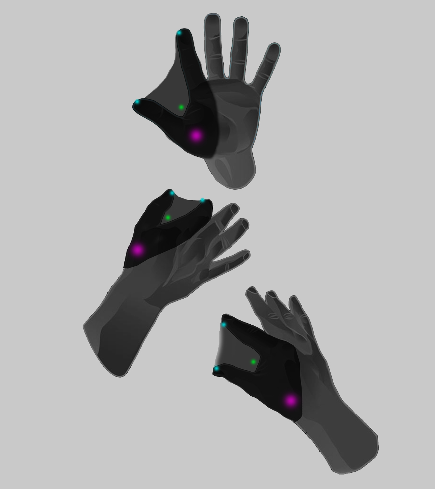

Project developed for "Artifacts of the Future" IaaC program that works towards the development of meta-objects taken from thefuture, 2053, and brought back to the present, along Degeneration of the Human Race//Ageing++Population thematics

In the past few decades, individuals have experienced dramatic changes in some of the most established dimensions of human life: time, space, matter, and individuality. These changes strain our everyday life and how we interact with the environment bringing us to question and design for how we will live in the future. The course will focus on a future scenario in 2053, where the global population will have hit 10 billion and the strain on the environment in both natural and artificial frameworks, toxicity levels, health and life expectancy, social interaction, and much more, will all have severe effects on our day to day relations: how we interact with each other and with our habitat.